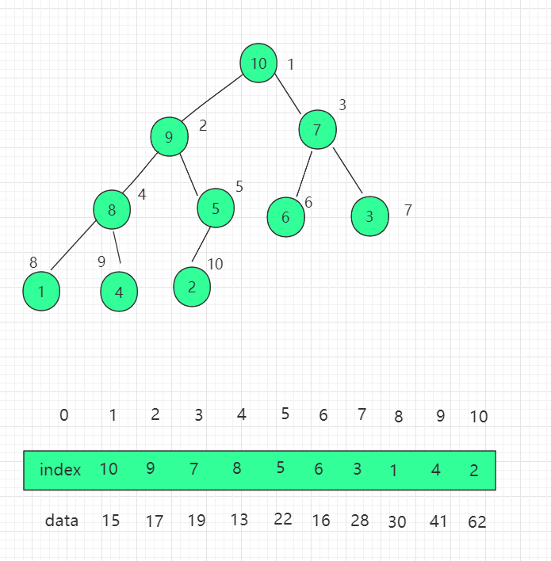
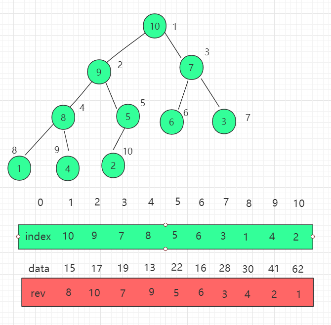

インデックスヒープとその最適化
一、概念とその紹介
インデックスヒープは、ヒープというデータ構造を最適化したものです。
インデックスヒープは、インデックス情報を格納するための新しいint型配列を使用します。
ヒープと比較した場合の利点は以下の通りです。
- 要素を交換する際のコストを最適化しました。
- 追加したデータの位置が固定されているため、探しやすくなります。
二、適用説明
ヒープに格納される要素が大きい場合、交換に多くの時間がかかります。そのような場合は、インデックスヒープのデータ構造で代替できます。ヒープには配列のインデックスが格納され、操作するのもインデックスになります。
三、構造図

以前のヒープのコード実装を改良し、インデックスを直接操作する考え方に変える必要があります。まずコンストラクタにインデックス配列のプロパティ indexes を追加します。
protected int[] indexes; // 最大インデックスヒープ内のインデックス
protected int count;
protected int capacity;
対応するコンストラクタを調整し、インデックス配列の初期化を追加します。
public IndexMaxHeap(int capacity){
data = (T[])new Comparable[capacity+1];
indexes = new int[capacity+1];
count = 0;
this.capacity = capacity;
}
...
挿入操作を調整します。indexes 配列に追加される要素は、実際の data 配列のインデックスです。indexes[count+1] = i。
// 最大インデックスヒープに新しい要素を挿入する。新しい要素のインデックスはi、要素はitem
// 渡されるiはユーザーにとって0始まりのインデックスです
public void insert(int i, Item item){
assert count + 1 <= capacity;
assert i + 1 >= 1 && i + 1 <= capacity;
i += 1;
data[i] = item;
indexes[count+1] = i;
count ++;
shiftUp(count);
}
...
shift up 操作を調整します：比較するのは data 配列内の親ノードデータの大きさなので、次のように表す必要があります。data[index[k/2]] < data[indexs[k]]index 配列のインデックスを交換し、data 配列には一切変更を加えません。shift down も同様です。
//kはヒープのインデックス
// インデックスヒープでは、データの比較はdataのサイズに基づいて行われますが、実際に操作するのはインデックスです。
private void shiftUp(int k){
while( k > 1 && data[indexes[k/2]].compareTo(data[indexes[k]]) < 0 ){
swapIndexes(k, k/2);
k /= 2;
}
}
...
インデックスヒープから要素を取り出す場合、最大要素がルート要素data[index[1]]のデータであり、その後インデックス位置を交換してshift down操作を行います。
public T extractMax(){
assert count > 0;
T ret = data[indexes[1]];
swapIndexes( 1 , count );
count --;
shiftDown(1);
return ret;
}
...
最大値の data 配列のインデックス値を直接取り出すこともできます。
// 最大インデックスヒープからヒープ先頭要素のインデックスを取り出す
public int extractMaxIndex(){
assert count > 0;
int ret = indexes[1] - 1;
swapIndexes( 1 , count );
count --;
shiftDown(1);
return ret;
}
...
インデックス位置のデータを変更する
// 最大インデックスヒープ内のインデックスがiの要素をnewItemに変更する
public void change( int i , Item newItem ){
i += 1;
data[i] = newItem;
// indexes[j] = i を見つけます。j は data[i] のヒープ内での位置を表します。
// その後 shiftUp(j) し、さらに shiftDown(j) します。
for( int j = 1 ; j <= count ; j ++ )
if( indexes[j] == i ){
shiftUp(j);
shiftDown(j);
return;
}
}
...
四、Java サンプルコード
ソースコードパッケージのダウンロード：Download
src/runoob/heap/IndexMaxHeap.java ファイルコード：
import java.util.Arrays;
/**
* インデックスヒープ
*/
// 最大インデックスヒープ。考え方：要素の比較はdataデータ、要素の交換はインデックス
public class IndexMaxHeap<T extends Comparable> {
protected T[] data; // 最大インデックスヒープ内のデータ
protected int[] indexes; // 最大インデックスヒープ内のインデックス
protected int count;
protected int capacity;
// コンストラクタ。capacity個の要素を格納できる空のヒープを構築する。
public IndexMaxHeap(int capacity){
data = (T[])new Comparable[capacity+1];
indexes = new int[capacity+1];
count = 0;
this.capacity = capacity;
}
// インデックスヒープ内の要素数を返す
public int size(){
return count;
}
// インデックスヒープが空かどうかを示すブール値を返す
public boolean isEmpty(){
return count == 0;
}
// 最大インデックスヒープに新しい要素を挿入する。新しい要素のインデックスはi、要素はitem
// 渡されるiはユーザーにとって0始まりのインデックスです
public void insert(int i, T item){
assert count + 1 <= capacity;
assert i + 1 >= 1 && i + 1 <= capacity;
i += 1;
data[i] = item;
indexes[count+1] = i;
count ++;
shiftUp(count);
}
// 最大インデックスヒープからヒープ先頭要素、つまりインデックスヒープに格納されている最大データを取り出す
public T extractMax(){
assert count > 0;
T ret = data[indexes[1]];
swapIndexes( 1 , count );
count --;
shiftDown(1);
return ret;
}
// 最大インデックスヒープからヒープ先頭要素のインデックスを取り出す
public int extractMaxIndex(){
assert count > 0;
int ret = indexes[1] - 1;
swapIndexes( 1 , count );
count --;
shiftDown(1);
return ret;
}
// 最大インデックスヒープのヒープ先頭要素を取得する
public T getMax(){
assert count > 0;
return data[indexes[1]];
}
// 最大インデックスヒープのヒープ先頭要素のインデックスを取得する
public int getMaxIndex(){
assert count > 0;
return indexes[1]-1;
}
// 最大インデックスヒープ内のインデックスがiの要素を取得する
public T getItem( int i ){
assert i + 1 >= 1 && i + 1 <= capacity;
return data[i+1];
}
// 最大インデックスヒープ内のインデックスがiの要素をnewItemに変更する
public void change( int i , T newItem ){
i += 1;
data[i] = newItem;
// indexes[j] = i を見つけます。j は data[i] のヒープ内での位置を表します。
// その後 shiftUp(j) し、さらに shiftDown(j) します。
for( int j = 1 ; j <= count ; j ++ )
if( indexes[j] == i ){
shiftUp(j);
shiftDown(j);
return;
}
}
// インデックスヒープ内のインデックスiとjを交換する
private void swapIndexes(int i, int j){
int t = indexes[i];
indexes[i] = indexes[j];
indexes[j] = t;
}
//********************
//* 最大インデックスヒープの中核となる補助関数
//********************
//kはヒープのインデックス
// インデックスヒープでは、データの比較はdataのサイズに基づいて行われますが、実際に操作するのはインデックスです。
private void shiftUp(int k){
while( k > 1 && data[indexes[k/2]].compareTo(data[indexes[k]]) < 0 ){
swapIndexes(k, k/2);
k /= 2;
}
}
// インデックスヒープでは、データの比較はdataのサイズに基づいて行われますが、実際に操作するのはインデックスです。
private void shiftDown(int k){
while( 2*k <= count ){
int j = 2*k;
if( j+1 <= count && data[indexes[j+1]].compareTo(data[indexes[j]]) > 0 )
j ++;
if( data[indexes[k]].compareTo(data[indexes[j]]) >= 0 )
break;
swapIndexes(k, j);
k = j;
}
}
// IndexMaxHeap をテストする
public static void main(String[] args) {
int N = 1000000;
IndexMaxHeap<Integer> indexMaxHeap = new IndexMaxHeap<Integer>(N);
for( int i = 0 ; i < N ; i ++ )
indexMaxHeap.insert( i , (int)(Math.random()*N) );
}
}
上記のインデックス位置の変更では、インデックス位置の検索に走査を使用しているため、効率が良くありません。さらに最適化して、一組のreverse[i]配列を維持し、インデックス i の indexes(ヒープ) 内での位置を表すことで、検索の時間計算量を O(1) に下げることができます。

以下のような性質があります：
indexes[i] = j reverse[j] = i indexes[reverse[i]] = i reverse[indexes[i]] = iその他の拡張